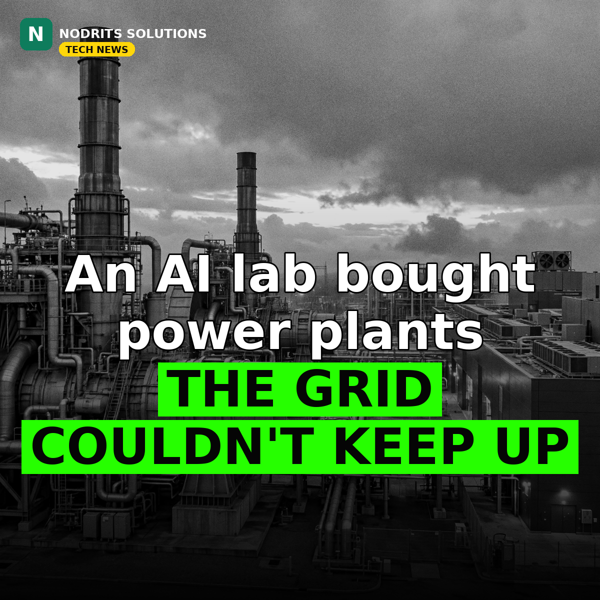

An AI Lab Reportedly Spent $3.4 Billion on Gas Turbines — Because the Grid Can't Keep Up

The AI bottleneck has moved from chips to electricity. The Financial Times reported on November 8, 2026 that Anthropic agreed in late September to take over roughly $3.4 billion of orders for Caterpillar gas-fired generators — about 1.7 gigawatts of capacity — from Texas supplier OnePWR Solutions, which had placed the orders about two years earlier. The FT called it the largest known single purchase of power-generation equipment by an AI lab. This is a reported deal: Reuters, which covered the FT report the same day, said it could not independently verify it, and neither Anthropic nor OnePWR commented.
What happened
Under the reported deal, Anthropic takes over the generator orders plus engineering and construction capabilities to install them; Anthropic is not acquiring OnePWR itself. The context is in Anthropic's own filings: its amended S-1 filing on November 2 flagged electricity availability as a major obstacle to expanding data centers, and the company has disclosed roughly $895 billion in aggregate committed infrastructure spending. The same week, the industry's power hunger was underlined from the other side: Meta's Muse Ember and Google's new TPU systems both arrived with efficiency as a headline feature.
Why it matters
When a leading AI lab starts buying power plants instead of just GPUs, it shows how energy-hungry frontier AI has become — and how power, not intelligence, may decide the next AI race. Every AI breakthrough now comes with a power bill, and the labs know it. The next AI advantage may belong to whoever secures the cheapest reliable power, not the best model. That changes the whole leaderboard — and it puts the energy question at the center of every AI strategy conversation.
What it means for you
Energy costs will shape AI pricing. Small businesses should choose AI tools on efficiency and cost, not just capability, and expect compute-heavy AI services to keep getting pricier as labs pay more for power. When you evaluate an AI tool, ask what it costs per task, not just how smart it is — the cheapest model that does the job may beat the smartest one. And if you sell AI services, start pricing with power in mind.
The Nodrits take
An AI lab reportedly spent $3.4 billion on gas generators because the grid can't keep up. Is AI's energy hunger a problem tech can engineer its way out of, or is the industry growing faster than the planet can power? Tell us in the comments on today's post.
Need a website, SaaS product or AI workflow built right?
Nodrits Solutions designs, develops and automates for businesses in Pakistan, the USA, UK, UAE and Saudi Arabia.
Talk to Nodrits →Sources: Reuters, reporting the Financial Times (November 8, 2026); TechCrunch coverage (November 9, 2026). The deal is reported, not confirmed: Reuters said it could not independently verify the FT report and neither Anthropic nor OnePWR commented. The $895 billion infrastructure figure and the electricity warning are from Anthropic's own disclosures.. Published November 10, 2026.